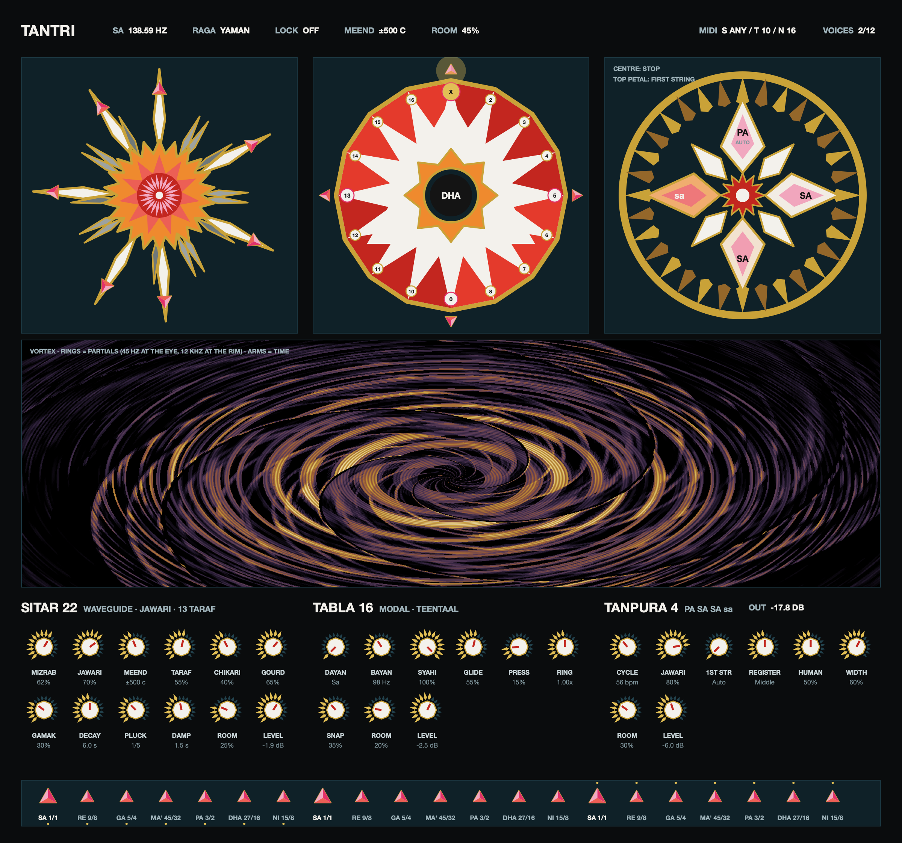
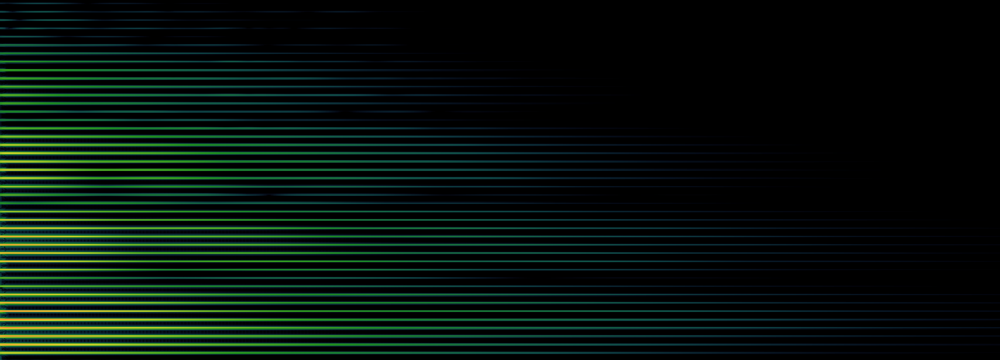
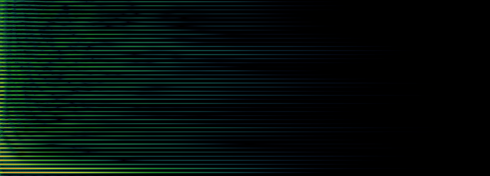
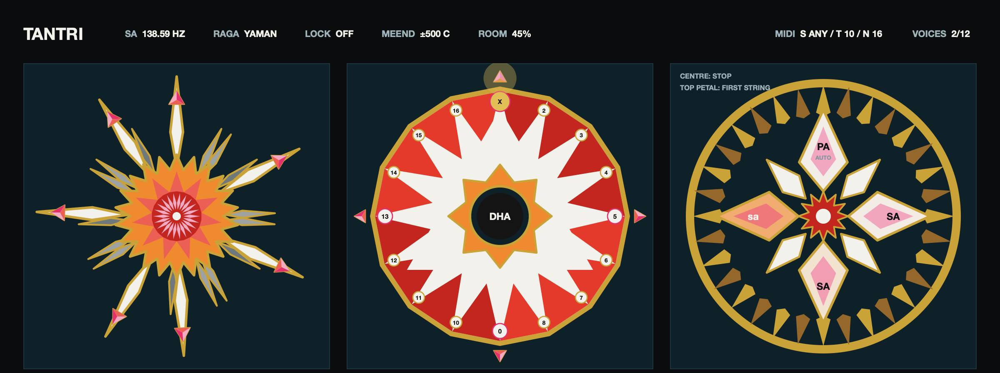
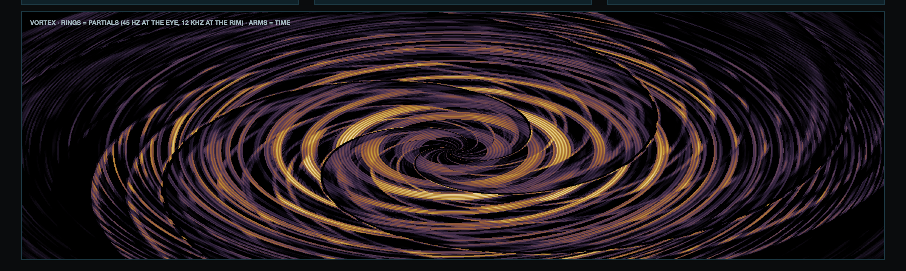

THE TANTRI WINDOW: THE 22-SHRUTI STAR, THE TEENTAAL CYCLE AND THE TANPURA FLOWER ON TOP, THE VORTEX SPECTROGRAM BELOW, CONTROLS AND THE RAGA STRIP AT THE BOTTOM.
Tantri (तन्त्री, "the stringed one") is a polyphonic MIDI instrument containing three classical Hindustani instruments. None of them uses samples, and none of them is tuned to twelve-tone equal temperament. Every pitch is a frequency for Sa that you choose in hertz, multiplied by a just ratio taken from the 22 shrutis and shaped by the raga.
| 1 | Quick start and MIDI map | 2 |
| 2 | Tuning: Sa, the 22 shrutis, ragas, the shruti star | 3 |
| 3 | Sitar: playing, meend, gamak, taraf, chikari | 4 |
| 4 | Tabla: bols and strokes | 5 |
| 5 | Tanpura: the drone | 6 |
| 6 | How the strings work: waveguides and the jawari bridge | 7 |
| 7 | How the tabla works: modal synthesis | 8–9 |
| 8 | The vortex spectrogram and the output stage | 10 |
| 9 | Parameter reference | 11 |
| INPUT | SITAR CHANNEL (DEFAULT: ANY) | TABLA CHANNEL (DEFAULT 10) |
|---|---|---|
| Note ≥ Sa key − 12 | sitar note: swara = (note − Sa key) mod 12, octave from the distance | every note plays a bol: note mod 12 → Ge Ke Ghe Na Tin Tun Te Re Dha Dhin Tit Kat |
| Note in [Sa−24, Sa−13] | tabla bol (split on), same order as channel 10 | |
| Note < Sa − 24 | chikari strike | |
| Velocity | mizrab force: louder, brighter, more jawari | stroke force: shorter contact, brighter |
| Pitch-bend | meend, ± MEEND cents, continuous (not quantised) | — |
| Poly aftertouch | that note glides toward the next raga swara | bayan pressure (pitch rises) |
| Channel pressure | all held notes glide toward their next swara | bayan pressure |
| CC1 mod wheel | gamak depth (oscillation toward the next swara) | bayan pressure |
| Tanpura channel (16) | while any note is held, the tanpura plays, even when it is switched off | |
Set the channels, the split and the Sa key from MIDI in the header. Tantri is a 12-voice polyphonic sitar. If a key is played again while its string is still ringing, it re-plucks the same string instead of starting a new one, as on the real instrument.
Sa is set in hertz (header: drag, or double-click to type). The default 138.59 Hz is a typical sitar Sa. There is no A = 440 anywhere in Tantri. Every other pitch is Sa × ratio × 2octave.
The ratios come from the classical system of 22 shrutis, the smallest intervals of Indian theory, written here in just intonation. They group into twelve swaras. Sa and Pa are fixed. Each of the other ten has two shruti candidates, such as Re = 10/9 or 9/8, and the raga decides which one is sung.
The sitar tile draws all 22 shrutis around a circle at their true cents positions, so you can see the unevenness of just intonation. The shruti chosen for each raga swara is a long gold-rimmed blade with a jewel. A small inner jewel marks an andolan swara, which is sung with a slow sway.
OFF lets all twelve keys sound their swara. SNAP moves keys outside the raga to the nearest raga swara, preferring the one below. MUTE silences them.
THE 22 SHRUTIS AT THEIR CENTS POSITIONS. GOLD = THE SHRUTIS OF RAGA YAMAN.
| SWARA | CANDIDATES (RATIO · CENTS) |
|---|
Yaman · Bhairav · Bhairavi · Todi · Kafi · Khamaj · Bilawal · Asavari · Marwa · Purvi · Darbari Kanada · Malkauns · Bhupali · Durga · Desh · Bageshri · Puriya Dhanashri · Shree · Bihag · Jog · Kirwani · Chandrakauns · Hamsadhwani · Megh · Sarva (all twelve). Each one sets the shruti of every swara (for example the ati-komal 256/243 re and 128/81 dha of Bhairav and Todi) and marks its andolan swaras (re and dha in Bhairav, ga and dha in Darbari).
Each note is a physically modelled steel string, made of two vibration planes (polarisations) that beat against each other slightly. The string passes over a curved bridge, the jawari, which gives the sitar its buzzing, shimmering tone. The plectrum (mizrab) alternates da and ra strokes, so consecutive notes start with opposite polarity, as a player's alternating strokes do.
Thirteen taraf (sympathetic) strings sit under the main strings, tuned to the raga's swaras from the one below upper Sa upward. Nobody plucks them. They ring when a played note shares their pitch or a partial, which produces the halo around the raga's own notes. Two chikari drone strings (upper Sa and the Sa above it) ring sympathetically as well, and keys below the tabla zone strike them for rhythmic jhala.
| CONTROL | WHAT IT DOES |
|---|---|
| MIZRAB | Plectrum hardness: narrower strike, brighter string, more noise at the attack |
| JAWARI | How open the bridge is: how strongly the string wraps onto its curve. 0 sounds like a guitar; high values give the full buzzing sitar tone |
| MEEND | Pitch-bend range in cents (also in the header) |
| TARAF | Level of the 13 sympathetic strings |
| CHIKARI | Level of the two drone strings |
| GOURD | Amount of the 14-mode body resonance (tumba gourd, tabli soundboard and neck) |
| GAMAK | Mod-wheel gamak depth and andolan depth |
| DECAY | T60 of a held note at Sa; higher notes decay a little faster |
| PLUCK | Where the mizrab strikes, as a fraction of the length from the bridge |
| DAMP | T60 after note-off. Sitarists rarely damp, so long values are the most authentic |
| ROOM / LEVEL | Reverb send and level |


ONE SA, 0–6 KHZ, 6 S. TOP: JAWARI 0, A PLAIN STRING. BOTTOM: JAWARI 100%, WITH DENSE HIGH PARTIALS AND SWEEPING NOTCHES, THE SITAR'S "SWISH".
The tabla is two drums. The dayan (right, wooden) is tuned to Sa or another swara. The bayan (left, metal, bass) is played with the wrist resting on the head, and pressing or sliding the wrist bends its pitch. Each drum is one vibrating head shared by every stroke. A damped stroke such as Te or Ke therefore really mutes whatever is still ringing, and an open stroke adds to it. Chapter 7 explains how the heads are synthesised.
| KEY | BOL | DRUM | HOW IT IS PLAYED, AND WHAT THE MODEL DOES |
|---|---|---|---|
| C | GE | bayan | fingertips on the maidan near the edge, open. Long boom; pitch set by BAYAN + PRESS |
| C♯ | KE | bayan | flat palm, stays on the head. All modes damped to ~30 ms, plus a low slap |
| D | GHE | bayan | Ge, then the wrist slides forward: the pitch rises over ~120 ms and settles back (GLIDE) |
| D♯ | NA | dayan | index finger on the rim (kinar) while the ring finger rests on the head. The fundamental is damped and harmonics 2–5 ring |
| E | TIN | dayan | index finger at the edge of the syahi, open. Bright and ringing |
| F | TUN | dayan | finger on the centre of the syahi, open. Strong fundamental, long sustain |
| F♯ | TE | dayan | three fingers flat on the syahi, left there. Dead and dry |
| G | RE | dayan | index finger flat on the syahi, damped |
| G♯ | DHA | both | Na + Ge together |
| A | DHIN | both | Tin + Ge together |
| A♯ | TIT | dayan | Te then Re, 45 ms apart |
| B | KAT | bayan | sharper closed slap |
| DAYAN | tuned to Sa, Pa, Ma, Ni (the raga's shrutis) or upper Sa |
| BAYAN | resting pitch of the bass drum, 60–160 Hz |
| SYAHI | 0 = a plain, inharmonic membrane; 100% = the loaded, harmonic tabla head (see chapter 7) |
| GLIDE | how far Ghe's wrist slide raises the pitch |
| PRESS | constant wrist pressure on the bayan |
| RING | scales every mode's decay time |
| SNAP | finger-impact noise at the start of each stroke |
The tabla tile is a 16-sided teentaal cycle: X marks sam (the first beat), 2 and 3 the other tali beats, 0 khali (the "empty" beat). When the host transport runs, the lit matra follows the host's beat, so four bars of 4/4 make one cycle. When it is stopped, the ring advances one matra per stroke. The black syahi in the centre shows the last bol played.
The theka (basic pattern) of teentaal is Dha Dhin Dhin Dha | Dha Dhin Dhin Dha | Dha Tin Tin Na | Na Dhin Dhin Dha, which on channel 10 is G♯ A A G♯ … E E D♯ D♯ … .
The tanpura is the classic four-string drone, plucked in an endless cycle: first string – Sa – Sa – kharaj sa (the low Sa an octave below), followed by a pause that lets the sound bloom. The two middle Sa strings are tuned a cent apart so that they beat gently, as two real strings do. Each string drifts very slowly within about ±1 cent, so the drone never sounds frozen.
Each string is the same jawari string model as the sitar, with two polarisations. Its bridge is the wide, flat tanpura bridge, opened by a cotton thread (also called jawari). That is where the slow "swirl" of harmonics rising and falling through each note comes from.
AUTO picks Pa if the raga has Pa, otherwise Ma, otherwise Ni, the way a musician retunes the first string for ragas such as Marwa or Malkauns. You can also force Pa, Ma, Ni or komal ni. Click the top petal of the flower to step through the choices. Its pitch is always the raga's own shruti.
Each petal is one string and lights up while it sounds. The ring of gold and brown blades around the flower moves with the drone. Click the centre to start or stop it.
| CONTROL | WHAT IT DOES |
|---|---|
| CYCLE | pluck tempo (plucks per minute); the pause after kharaj sa is two plucks long |
| JAWARI | thread position: how much the strings buzz and swirl |
| 1ST STR | Auto · Pa · Ma · Ni · ni |
| REGISTER | low, middle or high: the octave of the tanpura's Sa relative to the sitar's Sa |
| HUMAN | timing and force variation of the plucking hand |
| WIDTH | stereo spread of the four strings |
| ROOM / LEVEL | reverb send and level |

THE THREE TILES. RIGHT: THE TANPURA FLOWER WITH THE SOUNDING STRINGS LIT.
A plucked string carries two waves that travel in opposite directions and reflect, inverted, at the nut and at the bridge. A digital waveguide stores those two waves in two delay lines ("rails"). Their sum at any point is the string's displacement there. The time a wave takes to go round, nut → bridge → nut, is one period, so the loop length sets the pitch. That is why Tantri's pitches can be any ratio at all: the delay is fractional, and the loop is simply set to exactly sample rate ÷ (Sa × ratio) samples.
ONE SITAR STRING. EVERYTHING IN THE LOOP RUNS AT TWICE THE HOST SAMPLE RATE.
The nut end is a variable fractional delay with 4-point Lagrange interpolation. Fretting, meend, gamak and andolan move only this delay, smoothly, so a meend slides the pitch and never re-plucks. The rail lengths are fixed when a note starts, with headroom for the largest bend.
On a sitar the string does not end at one point. It lies along a gently curved bone bridge. As the string swings down it wraps further onto the curve, and as it swings up it lifts off. The effective string length therefore changes within every period, driven by the string's own motion. This continually throws energy into high partials, and the pattern changes as the note decays: the characteristic sweeping buzz.
Tantri models this with a passive nonlinear termination (after Pierce & Van Duyne, 1997). It is a chain of three normalised lattice allpass sections whose coefficient follows how hard the string presses into the bridge:
Each step is a rotation, so the bridge can never add energy, however fast it is modulated. The model is therefore unconditionally stable at any jawari setting. A slow average of the wrap lengthens the nut delay to match, so the settled pitch stays on its shruti (measured within 1.5 cents) while the attack keeps its brief, real sharpness.
A one-pole low-pass at the bridge removes more energy from high partials than from low ones, as a real string loses energy into the bridge and the air. Its gain is set from DECAY so the fundamental's T60 is exact. A 0.5 Hz DC blocker sits in the loop as well: because the bridge is one-sided it would otherwise build up an offset that a fixed-end string cannot have.
The mizrab is a raised-cosine displacement pulse injected at the pluck point, 0.2–0.9 ms wide depending on MIZRAB and velocity, with a little noise for the wire. Narrower pulses contain more high partials, and the pluck point notches out the harmonics that have a node there.
The sum of all bridge forces drives 13 single-loop sympathetic strings and the two chikari strings, coupled near their own bridge. Everything then passes through a bank of 14 resonant body modes (98 Hz – 4.3 kHz) for the gourd, soundboard and neck.
Fractional-delay interpolation low-passes slightly every time a wave passes, and a 138 Hz string passes 138 times a second. At the host rate that would eat the jawari's high partials. At 2× the loss falls above the audible band, and the new partials the bridge creates do not alias.
Strike a drum and its head does not move in one simple way. Its motion is a sum of modes: fixed vibration patterns, each with its own frequency, its own decay time, and a shape of moving areas separated by still lines (nodes). Whatever you do to the head, its free vibration afterwards is always a mix of the same modes. Only how much of each one gets excited changes.
Modal synthesis uses exactly that. Each mode becomes one decaying resonator, and a stroke decides how hard each resonator is hit. That gives a small, exact and very controllable drum. Tantri's dayan has 26 resonators and its bayan 17.
For an ideal circular membrane, mode (m, n) has m straight nodal diameters and n nodal circles, the outer rim included. Its shape across the radius is a Bessel function, Jm(zmn r), where zmn is the n-th zero of Jm. Its frequency is proportional to that zero:
These ratios (1, 1.59, 2.14, 2.30, 2.65 …) are not harmonic, which is why most drums have no clear pitch.
SIX MEMBRANE MODES (m, n). GOLD AND VIOLET MOVE IN OPPOSITE DIRECTIONS; THE DARK LINES ARE NODES, WHICH STAY STILL.
The tabla's black patch, the syahi, is a thick, heavy paste of iron filings and starch built up in layers at the centre of the head. In 1934 C. V. Raman showed what it does. Loading the centre lowers the modes by different amounts and pulls the first nine modes into five groups at harmonic ratios 1 : 2 : 3 : 4 : 5. That is why the dayan has a clear musical pitch and can be tuned to Sa.
MODE FREQUENCIES (×f₀) OF THE DAYAN. TOP: AN UNLOADED MEMBRANE. BOTTOM: WITH THE SYAHI, GROUPED ON 1–5 × f₀. THE SYAHI KNOB MOVES EVERY MODE CONTINUOUSLY BETWEEN THE TWO.
Each mode is a complex one-pole resonator: a point that rotates by the mode's angle every sample and shrinks a little each time.
Struck once, it rings as a sine wave that decays in exactly T60 seconds. Because it is a rotation, ω can change on every sample with no clicks and no instability. That is what lets the bayan's pitch bend under the wrist.
A finger is not an instantaneous impulse. It stays on the head for a fraction of a millisecond (a sharp rim stroke) up to several milliseconds (a soft bayan Ge). Tantri drives every mode with a raised-cosine force pulse of unit area, F[n], of that length. A longer contact filters out the high modes, just as a soft strike sounds darker. A harder velocity shortens the contact, so loud strokes are also brighter.
A mode is only excited as much as the head moves where you strike it. The weight of mode k is its radial shape at the strike radius, Jm(zmn·rstrike), normalised. Tun strikes the centre (r ≈ 0.08), so only m = 0 modes respond and the fundamental dominates. Na strikes the rim (r ≈ 0.93), close to a node of the fundamental, so the upper harmonics ring. Each stroke also scales the five harmonic groups and the high group (table on the right).
What stops a mode is as important as what starts it. Each stroke leaves a set of extra damping times on the head until the next open stroke lifts the fingers. Te leaves three fingers on the syahi, so every mode dies within 30–45 ms. Na leaves the ring finger resting, which kills only the fundamental group (40 ms) and lets the harmonics sing. The effective decay is
| STROKE | CONTACT | STRIKE r | EXCITES (h1–h5, high) | LEAVES DAMPED |
|---|---|---|---|---|
| NA | 0.45 ms | 0.93 | .12 1 .85 .6 .5 .7 | h1 (40 ms) |
| TIN | 0.7 ms | 0.62 | .55 1 .55 .4 .3 .35 | — |
| TUN | 1.4 ms | 0.08 | 1 .25 .3 .12 .1 .05 | — |
| TE | 1.8 ms | 0.15 | .8 .35 .4 .25 .2 .4 | all (20–45 ms) |
| RE | 1.1 ms | 0.30 | .6 .5 .45 .3 .3 .45 | all (25–60 ms) |
| GE | 3.0 ms | 0.72 | 1 .55 .35 .25 .18 .15 | — |
| KE | 4.0 ms | 0.45 | .6 .45 .35 .3 .25 .3 | all (20–35 ms) |
Every mode with m > 0 exists twice, as cosine and sine versions turned 90° apart. On a perfect head they share one frequency. On a real, slightly uneven head they split by a fraction of a percent and beat. Tantri adds the second partner 0.35% (dayan) or 0.6% (bayan) higher, which gives the slow shimmer of a sustained Tun or Ge.
A hard stroke stretches the head, which raises its tension and briefly sharpens every mode. Tantri follows the drum's own amplitude and raises all mode frequencies slightly while it is loud. The pitch therefore falls a hair as each stroke dies away, which you can hear clearly on a loud Ge.
Pressing the heel of the hand into the bayan raises the tension, so the pitch multiplier becomes 1 + 0.55 · pressure, applied to every mode. Pressure is the sum of PRESS, aftertouch, the mod wheel, and Ghe's automatic slide (up in 120 ms, back in 0.9 s).
TUN VERSUS NA ON THE SAME HEAD: TUN IS DOMINATED BY THE FUNDAMENTAL; NA HAS ITS FUNDAMENTAL DAMPED, SO THE HARMONICS RING.

THE VORTEX DURING A YAMAN ALAP WITH TABLA.
The jawari is easy to see here. A buzzing note keeps its outer rings lit long after a plain string would have gone dark. The tanpura's swirl shows up as rings glowing and fading in waves, and a damped tabla stroke is a short bright flash that the next arm swallows.
The instruments are balanced so that normal playing never reaches the limit. These are measured peaks at the default settings:
| MATERIAL | PEAK |
|---|---|
| sitar alap | −7.4 dBFS |
| sitar six-note chord, velocity 127 | −5.0 dBFS |
| tabla teentaal | −4.5 dBFS |
| tanpura | −10.9 dBFS |
| all three together | −2.8 dBFS |
After the mix sits a stereo-linked look-ahead peak limiter with a −1 dBFS ceiling. It watches the next 1.5 ms of audio and reaches the gain needed for the loudest coming sample before that sample leaves, so the output never exceeds the ceiling and nothing is clipped or saturated. The 1.5 ms of latency is reported to the host for compensation.
The OUT readout beside the tanpura title shows the peak before the limiter. When the limiter acts, it adds LIMIT x.x with the gain reduction in dB. In practice that only happens with all level knobs and the master turned up, or with twelve notes struck at full velocity in the same instant.
| Sa (Hz) | 55–440 Hz, default 138.59 |
| Sa key | MIDI note of madhya Sa, 36–84, default 60 |
| Raga | 25 ragas (loads the shrutis, taraf, tanpura) |
| Raga lock | Off · Snap · Mute |
| Room size | shared 8-line FDN reverb |
| Master | output level, into the limiter |
| Channels | sitar (Any), tabla (10), tanpura (16) |
| Tabla split | on: tabla and chikari below the sitar range |
| Mizrab · Jawari · Taraf · Chikari · Gourd · Gamak | 0–100 % |
| Meend | 0–1200 cents |
| Decay | 1–20 s |
| Pluck | 1/20 – 1/2 of the length from the bridge |
| Damp | 0.1–20 s after note-off |
| Dayan | Sa · Pa · Ma · Ni · Sa' |
| Bayan | 60–160 Hz |
| Syahi · Glide · Press · Snap | 0–100 % |
| Ring | 0.3–2.5 × decay |
| On | click the flower's centre |
| Cycle | 20–120 plucks per minute |
| Jawari · Human · Width | 0–100 % |
| 1st string | Auto · Pa · Ma · Ni · ni |
| Register | Low · Middle · High |
12 sitar voices at once, plus the tabla and the tanpura, use about 7% of one Apple M2 core at 48 kHz. All 22 shrutis were measured in three octaves of four ragas: worst error 0.3 cents without jawari and 1.5 cents with it.
C. V. Raman, The Indian musical drums, Proc. Indian Acad. Sci. A1 (1934) · J. O. Smith, Physical Audio Signal Processing (digital waveguides) · J. R. Pierce & S. A. Van Duyne, A passive nonlinear digital filter design…, JASA 101 (1997) · S. Siddiq, A physical model of the nonlinear sitar string, Archives of Acoustics 37 (2012) · V. Välimäki et al., Discrete-time modelling of musical instruments, Rep. Prog. Phys. 69 (2006).